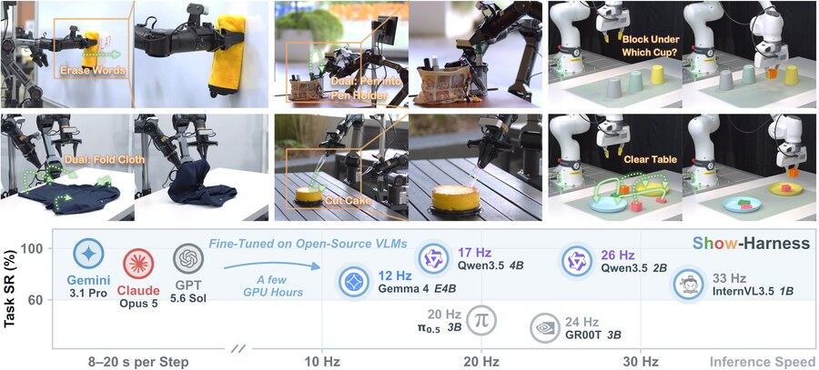
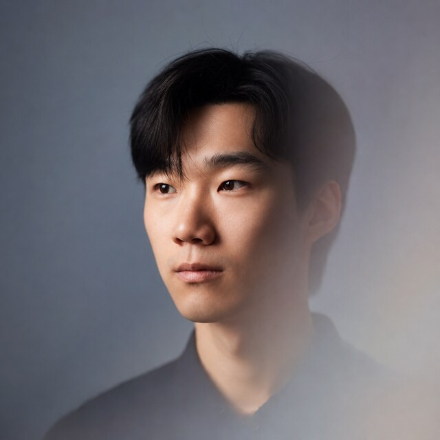
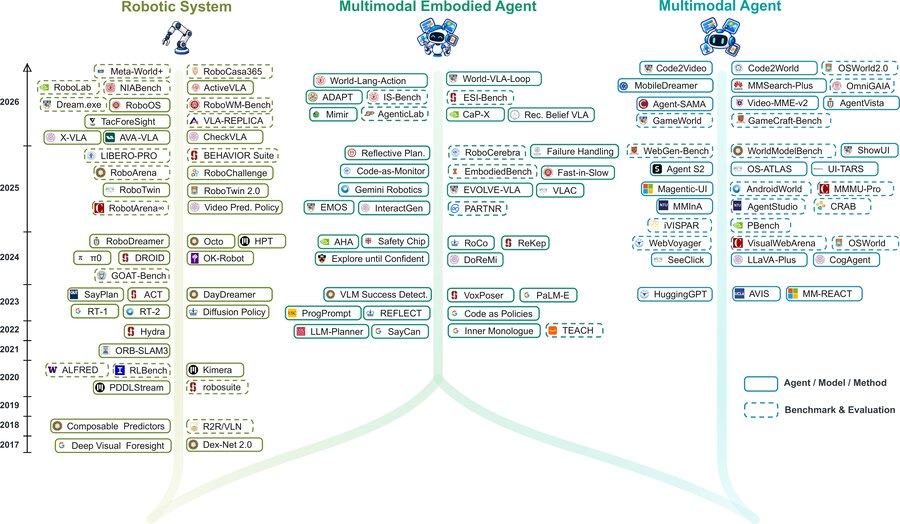
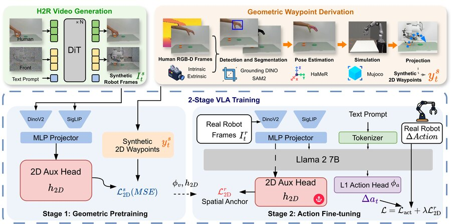
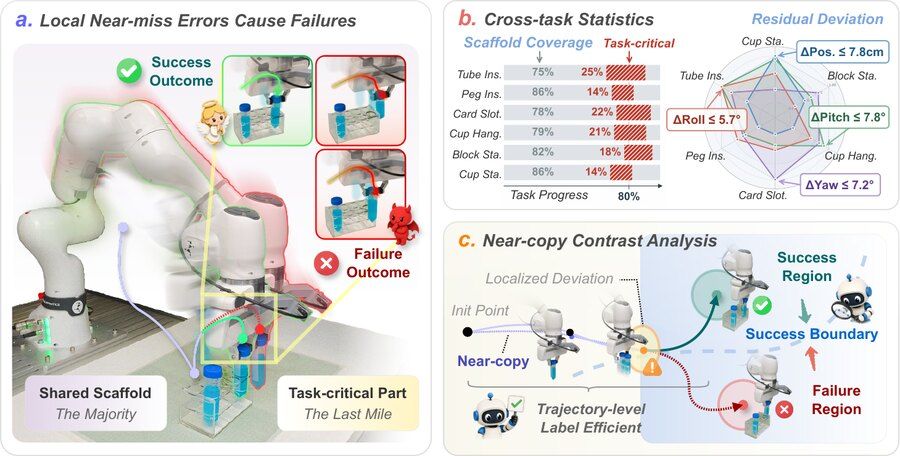
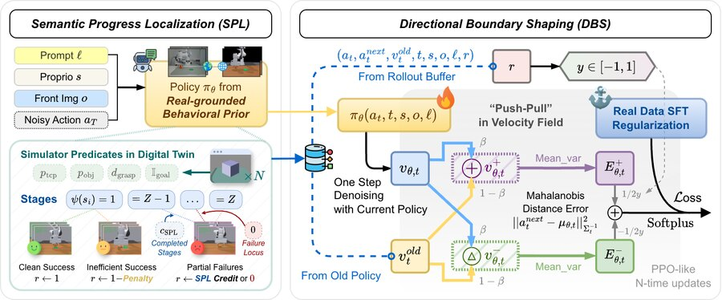
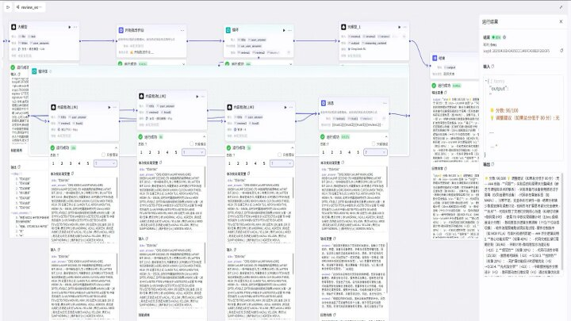
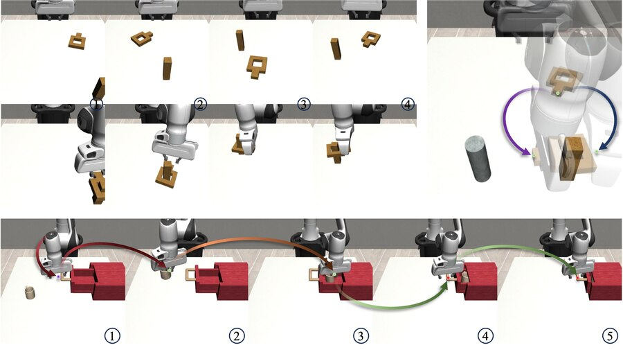
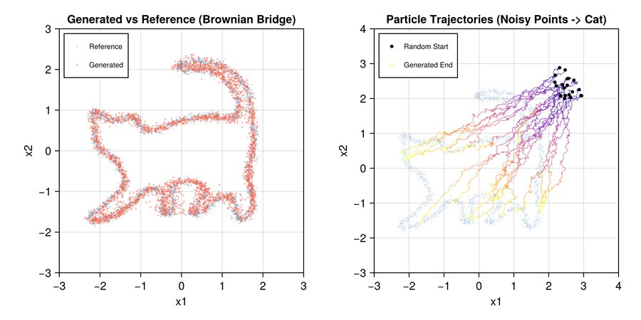
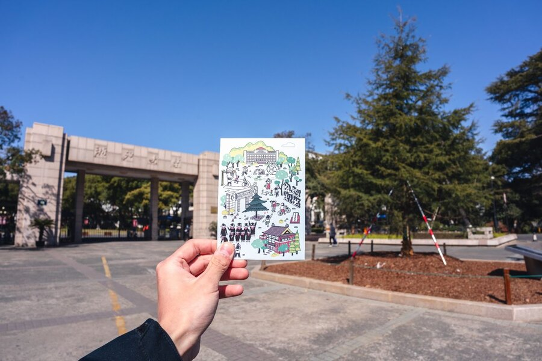

Show-Harness: Just a VLM Agent Can Play Robot
Preprint in preparation · 2026.09
Show Lab, College of Design and Engineering, National University of Singapore

I am an M.Sc. student in ECE. I am also conducting research on robot policy learning at Show Lab under the advice of Prof. Mike Zheng Shou. My research interests include Diffusion Models, VLA Models and World Models.
Previously, I received my bachelor's degree in Automation from Zhejiang University, where my early research focused on control for robots.

Preprint in preparation · 2026.09

Preprint in preparation · 2026.09

Arxiv Preprint · 2026.06

Under Review · 2026.05

Under Review · 2026.05

In Research and Exploration in Laboratory · 2026.02

In 2024 China Automation Congress, IEEE · 2024.11
Supported by the CNSF under Grant No. U21A20485

Course Blog for NUS EE5311 · 2026.03

In China Campus · 2025.06
I am currently looking for full-time opportunities as an Algorithm Engineer or Researcher in Generative AI and Embodied Foundation Models, as well as PhD opportunities. For further details regarding my experience, please refer to my CV (CN).